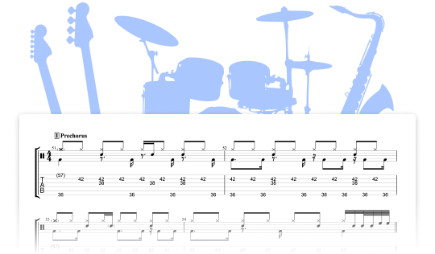
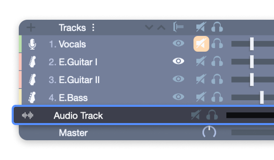

GuitarPro 快问快答：8 个问题把这款打谱软件说透
整理了吉他手最常问 Guitar Pro 的八个问题——它是什么、怎么装、鼓组怎么写、音色混音够不够用、mySongBook 值不值、和其他打谱软件比怎样、新手有哪些坑、要不要长期用。
整理一篇关于 Guitar Pro 的快问快答——别说是刚入坑的新手，很多用了两三年的老吉他手也未必把它的功能摸透。
Guitar Pro 到底是个什么软件？
一句话：吉他手（以及贝斯手、鼓手）的乐谱编辑 + 虚拟乐器播放一站式工具，先去官网转一圈你就知道。它的核心是六线谱（吉他 tab），但发展到现在已经不只是"写谱子"——内置了贝斯谱、鼓组谱、钢琴谱、人声谱等多种谱面类型，每种轨道都能独立挂效果器、调节音色，最后还能做混音和母带，导出音频直接分享。
很多人把 Guitar Pro 归为"打谱软件"，但它早就是一个轻量化的音乐制作工具了。真正还在对标专业 DAW（Pro Tools、Logic）的人不多，大部分吉他手用它就是为了：把脑子里的旋律或扒出来的 riff 落成谱，听一遍整体感觉，再导出给队友或发社区。

它适合谁？不适合谁？
适合的：练琴需要对照谱子的、扒带需要落谱保存的、写歌需要快速听编曲 demo 的、带乐队需要发分轨谱给队友的。不管你是初学者练和弦切换还是进阶玩家写复杂 solo，Guitar Pro 都是高频工具。
不太适合的：完全不听歌不扒带、只靠耳朵练琴的纯即兴派；或者已经有完整 DAW 工作流（用 Logic/Ableton 编曲 + 用其他工具写谱）的专业制作人。后者可能觉得 Guitar Pro 的音色质量、效果器种类、混音能力都不够用。
安装和版本怎么选？
目前主流版本是 Guitar Pro 8，上一个大版本是 7.5。两者的核心区别：GP8 加了独立鼓组混音器（每个打击乐元素能单独调音量和声像）、改进了虚拟指板和钢琴卷帘、支持 MIDI 输入鼓组。如果你还在用 GP7.5，升级的主要动力就是鼓组混音器——之前整个鼓组只有一个音量滑块，写复杂节奏组时非常别扭。
安装包从官方下载渠道拿，Windows 和 macOS 都有原生版本，不支持国产 Linux 发行版（Ubuntu、Debian 可以通过 Wine 勉强跑，但体验打折扣）。手机端有 Guitar Pro 手机版，主要功能是看谱子和简单编辑，不适合重度创作。
写谱子的核心流程是什么？
典型的流程：新建项目 → 选调弦 → 开始输入音符 → 添加技巧标记 → 配其他轨道 → 混音 → 导出。
音符输入最常用的方式是键盘直接敲——顶排数字键 1~9 切换时值（全音符到五连音），方向键在六线谱上移动光标，字母键直接输入品格号。速度更快的方式是用 MIDI 吉他或电子鼓边弹边录，Guitar Pro 会把你的演奏实时转换成谱子。
技巧标记是 Guitar Pro 的强项——推弦（B）、揉弦（V）、滑音（/）、闷音（P）、琶音（A）这些常用技巧都有快捷键，点一下就标记上，播放时虚拟乐器会自动模拟对应效果。
鼓组和贝斯怎么配合写？
这是很多吉他手的盲区——只写吉他轨不管节奏组，出来的 demo 听起来很单薄。
Guitar Pro 的鼓组轨用网格视图写最直观：纵轴是不同打击乐元素（底鼓、军鼓、踩镲、嗵鼓从上到下排列），横轴是时间，十六分音符一拍分四格，点格子就触发对应打击乐。顶排数字键 1~9 切换打击乐元素，Tab 跳到下一格，操作和吉他轨的时值切换逻辑一致。
GP8 的鼓组混音器是核心升级——底鼓（低频核心）必须居中，军鼓也居中保持声场稳定，踩镲左偏 20%~30% 增加立体感，嗵鼓上下对称分布（上嗵左 40%、下嗵右 40%），Crash 镲右偏 50%~70% 营造宽声场。底鼓可以加一点压缩让低频更集中，军鼓提 3~5kHz 频段增加攻击感。
写的时候同时打开鼓组轨和贝斯轨的网格视图对齐时间位置——底鼓的每一下通常需要贝斯根音同时出击，这个配合关系别忘。内置了 Standard Rock、Heavy Metal、Jazz、Funk、Reggae 等多种鼓型预设，切换鼓型时已有节奏保留，只是音色变化。

音色混音和母带处理能做到什么程度？
结论：对非专业场景够用，对专业母带不够。
混音层面，每个轨道可以挂效果器链——压缩、EQ、延迟、混响、合唱、八度、失真……常用的都有。吉他轨的音色模拟（箱头、箱体、麦克风位置）是 Guitar Pro 的传统强项，内置了 Mesa Boogie、Marshall、Fender 等经典箱头的模拟，箱头参数记不住时去GuitarPro文档翻一下各个预设组合的适用风格。
母带处理是 GP8 内置的最后一道工序，总混音轨道上可以加四个模块：1.5:1 ~ 2:1 低比率压缩器（把整个混音"粘"成一个整体）、阈值 -0.3dB 的限制器（防止峰值爆音）、10 段图形 EQ（微调全局频谱，每段不超过 ±3dB）、以及可选的极少量大厅混响。
有个关键概念要知道：现代流媒体平台的标准响度是 -14 LUFS。太响的曲子上传到 Spotify 或 YouTube 会被自动降音量，反而因为损失动态范围更难听。Guitar Pro 内置了 LUFS 计量器，导出前跑一遍确认平均读数在 -14 ±1 dB 就好。
Guitar Pro 的母带替代不了专业 DAW 的多段压缩、瞬态整形、Mid/Side 处理，但对于分享到社区、发朋友圈、给队友听 demo 的作品来说完全够了。真想做专业母带，可以在 Guitar Pro 里导出分轨音频，丢进 Logic 或 iZotope Ozone 处理。
mySongBook 订阅值不值得买？
这要看你找谱的频率和需求。
mySongBook 是 Guitar Pro 内置的专业乐谱订阅库，和网上免费 GTP 谱的核心区别：前者是专业转录员制作、经审核的正版授权谱，而且通常是完整多轨配器（吉他 + 贝斯 + 鼓组 + 钢琴 + 人声）；后者质量参差不齐，大多只有主音吉他单轨，版权也有问题。
价格方面：月付约 6 欧元，年付约 45 欧元（比月付便宜 40%），单首买约 1.5 欧元。新用户首次注册可以拿到几首免费谱子体验质量。
推荐买的情况：每天练琴、常找各种风格的谱子；想要完整乐队配器来听整体编曲；练冷门曲目（热门曲目网上免费谱基本够用）。不推荐的：主要靠自己扒带、很少找现成谱；只需要某几首特定的谱子（用单首购买比订阅划算）。
取消可以随时操作，取消后已下载的谱子还能继续看和编辑，但不能下载新谱了。
和其他打谱软件比有什么优势？
市面上主要竞品有 MuseScore（免费开源）、Power Tab Editor（免费）、TuxGuitar（免费开源）。
Guitar Pro 的核心优势：虚拟乐器音色质量——吉他箱头模拟、鼓组音色、贝斯音色都是同类型软件里最接近真实乐器的；效果器链和混音能力——其他打谱软件基本没有多轨混音，更别说母带处理；mySongBook 生态——内置订阅库省了到处搜免费谱的时间。
MuseScore 的优势是免费开源、支持 MusicXML 标准、适合严肃乐谱排版（古典乐谱、合唱谱），但虚拟乐器音色是合成器级别，混音功能几乎没有。简单说：写摇滚/流行/金属的吉他谱用 Guitar Pro，写古典/合唱/乐谱出版用 MuseScore。
新手最容易踩的坑有哪些？
第一，只写吉他轨不管节奏组——出来的 demo 干瘪得像手机外放的单音，给队友听会被嫌弃。最少也要配个贝斯轨和基础鼓组。
第二，不练快捷键直接用鼠标点——Guitar Pro 的编辑速度很大程度靠快捷键堆出来。顶排数字键切时值、字母键输品格、技巧标记一键加，鼠标用来选菜单和调参数就够了。Ctrl+Shift+P 命令面板记一下，找不到的功能随时搜。
第三，混音时各轨音量堆到最大——总混音爆音（Clipping）是新手高频问题。每个轨道的峰值保持在 -6dB 以下，总混音峰值不超过 -0.3dB（母带限制器会兜底，但别让它一直闪红灯）。
第四，mySongBook 订阅不注意取消——年付默认自动续费，忘了取消会被默默扣第二年的钱。如果只是短期用，订阅后第一件事就是去账户设置里关掉自动续费。
这些整理好的资料分别同步到了 GitHub、Gitee 和 GitCode，国内访问可以选 Gitee 或 GitCode。
最后一句：如果你弹吉他或贝斯，又不想花大价钱买专业 DAW，Guitar Pro 是值得长期装着的工具——写谱、听效果、练技巧、分享作品，一个软件搞定。